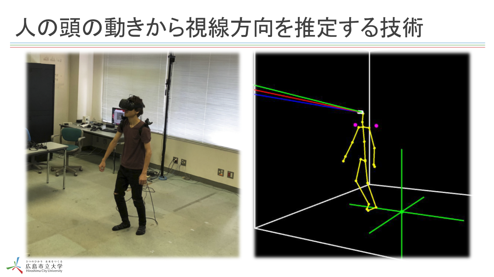
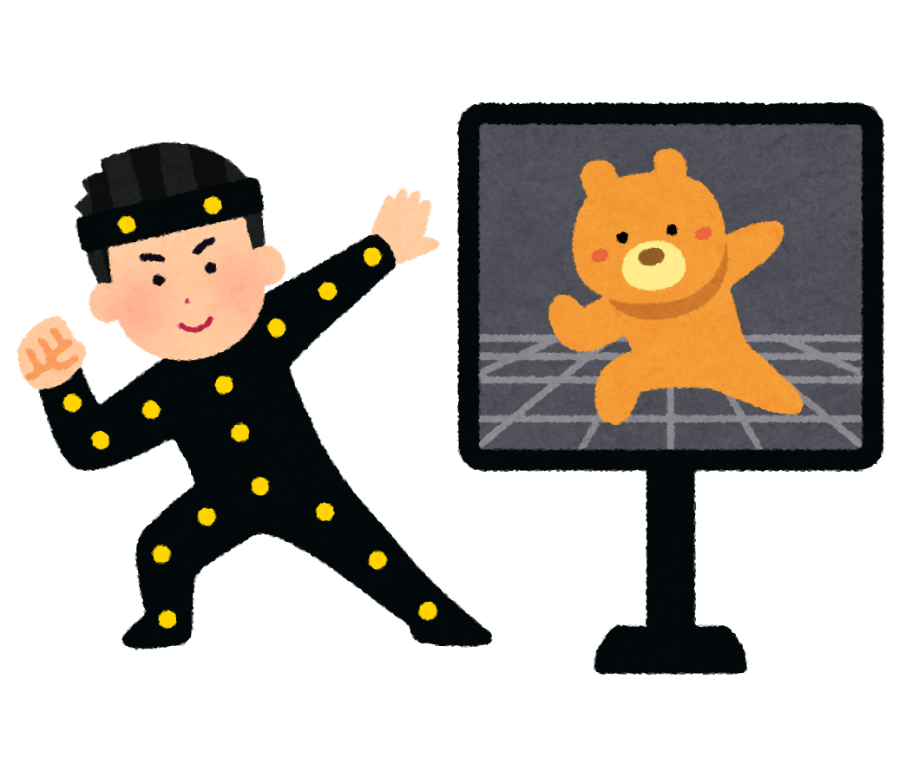
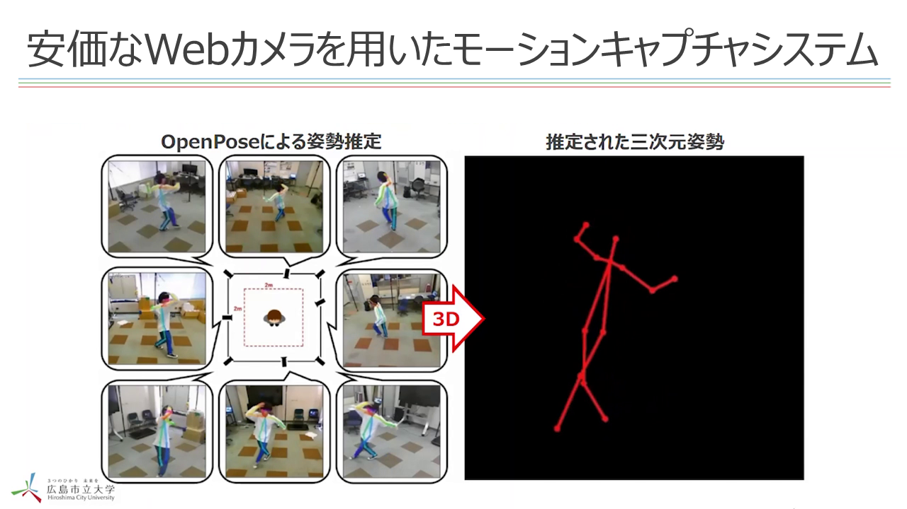
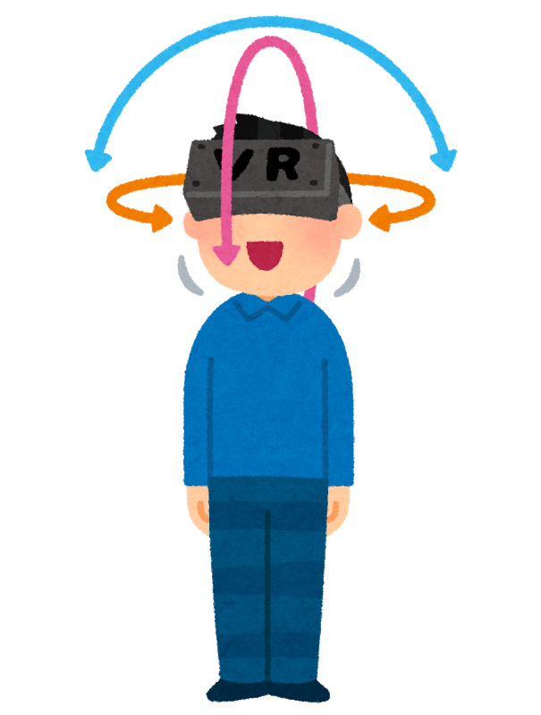
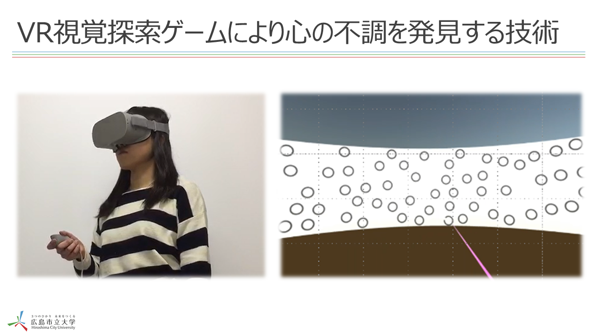

注視推定 注視推定 アイトラッカーと呼ばれる特殊・高額な装置を用いることなく，人の頭の動きから視線方向を推定する技術です．VRゴーグルをかぶった人の視線方向を推定することもできます．  ビデオを見る
モーションキャプチャ モーションキャプチャ 非同期で動作する複数カメラを用いて人物三次元モーションを推定する技術です．これにより，これまでにない安価なモーションキャプチャシステムが実現できます．  ビデオを見る
心の健康状態の推定 心の健康状態の推定 視覚探索課題（「ウォーリーを探せ」のように特定対象を探す課題）を行うVRゲームを行ってもらうことでその人の心の健康状態を推定する技術です．  ビデオを見る